If you don't want to print now,
Generalising from data
Most data sets do not arise from randomly sampling individuals from a finite population. However we are still rarely interested in the specific individuals from whom data were collected.
The recorded data are often 'representative' of something more general.
The main aim is to generalise from the data.
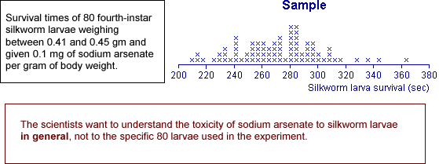
Randomness of data
Not only do we usually have little interest in the specific individuals from whom data were collected, but we must also acknowledge that our data would have been different if, by chance, we had selected different individuals or even made our measurements at a different time.
We must acknowledge this sample-to-sample variability when interpreting the data. The data are random.
All graphical and numerical summaries would be different if we repeated data collection.
This randomness in the data must be taken into account when we interpret graphical and numerical summaries. Our conclusions should not be dependent on features that are specific to our particular data but would (probably) be different if the data were collected again.
The more data that we collect, the more accurately our data will reflect population characteristics, but randomness always exists.
Data that are not sampled from a finite population
There is no real finite population underlying most data sets from which the values can be treated as being sampled. The randomness in such data must be explained in a different way.
Sampling from an abstract population
"Random sampling from a population" is also used to explain variability even when there is no real finite population from which the data were sampled.
We imagine an abstract population of all values that might have been obtained if the data collection had been repeated. We can then treat the observed data as a random sample from this abstract population.
Defining such an underlying population therefore not only explains sample-to-sample variability but also gives us a focus for generalising from our specific data.
Distributions
When an abstract population is imagined to underlie a data set, it often contains an infinite number of values. For example, consider the lifetimes of a sample of light bulbs. The population of possible failure times contains all values greater than zero, and this includes an infinite number of values. Moreover, some of these possible values will be more likely than others.
This kind of underlying population is called a distribution.
Positions of cow in a field
Consider the positions of a cow in a field at 6 different times where all locations are equally likely.
The population here contains all possible positions and is therefore infinite.
The idea of a distribution also allows for some possible values to be more likely than others — the cow may be more likely to be in some particular part of the field.
Sampling from a population
Sampling from an underlying population (whether finite or infinite) gives us a mechanism to explain the randomness of data. The underlying population also gives us a focus for generalising from our sample data — the distribution of values in the population is fixed and does not depend on the specific sample data.
Unknown population
Unfortunately the population underlying most data sets is unknown and, in practice, we only have a single sample. However this single sample does throw light on the population distribution.
The diagram below describes a sample from a categorical distribution. Although the underlying population is unknown, the sample proportion of successes, p, is an estimate of the unknown proportions of successes in the population (denoted by π).
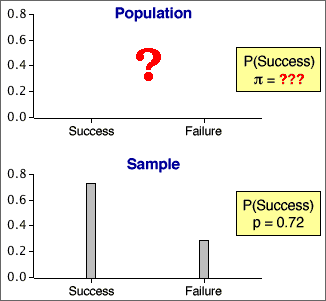
Probabilities for a finite population
Random sampling from populations is described using probability. If one value is sampled from a finite population of N distinct values, we say that
Many populations contain values that occur more than once. When sampling from any population,
The probability that a single sampled value is either x, y, ... is the proportion of population values that are either x, y, ... .
For numerical populations, the most useful form of this result is:
Prob( a < X < b ) = propn of values between a and b.
Probability and population proportion
When sampling from any population, whether finite or infinite,
The probability of sampling any value or range of values equals the proportion of these values in the population.
Probability and long-term proportion
An alternative but equivalent way to think about probability arises when we can imagine repeatedly selecting more and more values from the population (e.g. repeating an experiment). The probability of any value or range of values is the limiting proportion of these values as the sample size increases.

The equivalence of the two definitions is called the law of large numbers.
Describing categorical and discrete populations
Categorical and discrete samples can be described graphically with bar charts of the proportions for the distinct values. Since probabilities are defined to be population proportions, the underlying population can also be described by a bar chart.
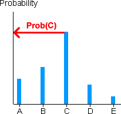
Bar charts and the law of large numbers
The law of large numbers states that sample proportions approach the underlying probabilities as the sample size increases. This means that a sample bar chart will be close in shape to the unknown population bar chart if the sample size is big enough.
Histograms and probability density functions
The situation is a little more complicated for continuous numerical populations and samples. A standard histogram could be used to describe the population in the same way that it might be used for a sample:
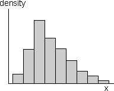
However with an infinite population, we can narrow the histogram classes beyond what would be reasonable for a finite sample. Indeed, class widths can be reduced indefinitely, resulting in a smooth histogram called a probability density function. This is often abbreviated to a pdf.
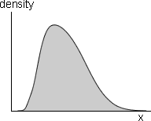
Probability density functions are still essentially histograms and share all properties of histograms.
Shape of a probability density function
A probability density function is usually a fairly smooth curve, though a single sample histogram provides limited information about its likely shape.

Normal distributions
One flexible group of continuous probability density functions is the family of normal distributions. Normal distributions:
Changing the parameters µ and σ changes where the distribution is centred and its spread, but its shape remains otherwise the same.
The parameters are often estimated from a sample. Details will be given later, but the resulting normal pdf will be close in shape to a histogram of the sample data.
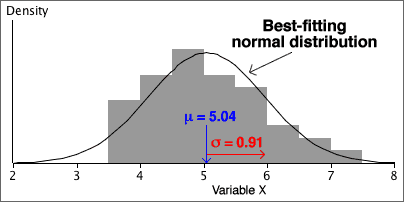
Probabilities from a histogram
In the histogram of any finite sample or population, the area above any class is the proportion of values in the class.

Probabilities from a probability density function
Since a probability density function (pdf) is a type of histogram, it satisfies the same property.
The probability that a sampled value is within two values, P(a < X < b), equals the area under the pdf.
This is the key to interpreting pdfs.

For any events, A and B, the following properties always hold.
Probabilities are always between 0 and 1
0 ≤ P(A) ≤ 1
Meaning of probabilities 0 and 1
If the event A cannot happen then P(A) = 0
If the event A is certain to happen then P(A) = 1
Probability that an event does not happen
P(A does not happen) = 1 - P(A)
Addition law
When two events cannot happen together, they are said to be mutually exclusive. If A and B are mutually exclusive,
P(A or B) = P(A) + P(B)
If the events A and B are not mutually exclusive,
P(A or B) < P(A) + P(B)
Independence
When sampling with replacement from a finite population, the choice of each value does not depend on the values previously selected. The successive values are then called independent. This also holds when sampling from an infinite population (distribution).
On the other hand, if sampling without replacement from a finite population, successive sample values are not independent since the second value selected cannot be the same as the first value, so knowing the first value affects the probabilities when the second value is selected.
Sampling mechanism
The mechanism of sampling from a population explains randomness in data.
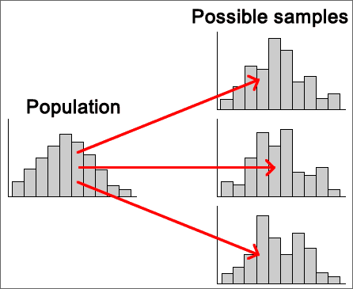
In practice, we must use a single sample to find information about the population.
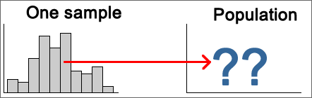
Parameters and statistics
We usually focus attention on a small number of numerical characteristics.
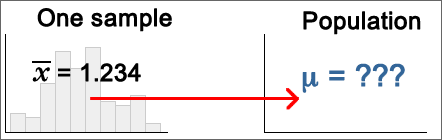
Variability of sample statistics
The variability in random samples also implies sample-to-sample variability in sample statistics.
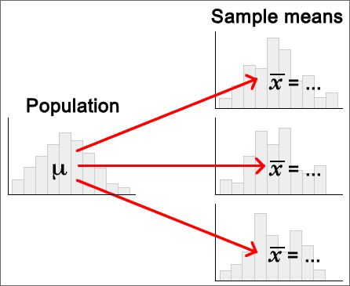
Distribution of the sample mean
The mean of a random sample of n values is a random quantity. Its distribution is centred on the population mean but its spread is lower then that of the population distribution.
Centre and spread of the sample mean's distribution
We can be more precise. If the population has mean µ and standard deviation σ, then the mean of a sample of n values,  ,
has a distribution with mean and standard deviation:
,
has a distribution with mean and standard deviation:
 = μ
= μ
 =
= 
Shape of the mean's distribution
Whatever the shape of the population distribution,
 = μ
= μ  =
= 
However skewness in the population distribution leads to some skewness in the distribution of the mean.
Samples from normal populations
When the population distribution is normal, the sample mean also has a normal distribution.
 ~ normal (μ ,
~ normal (μ ,  )
)
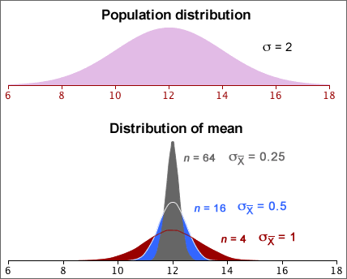
Means from non-normal populations
Irrespective of the shape of the population distribution,
 = μ
= μ  =
= 
If the population is not a normal distribution, the sample mean does not have a normal distribution. However the Central Limit Theorem states that...
For most non-normal population distributions, the distribution of the sample mean becomes close to normal when the sample size increases.
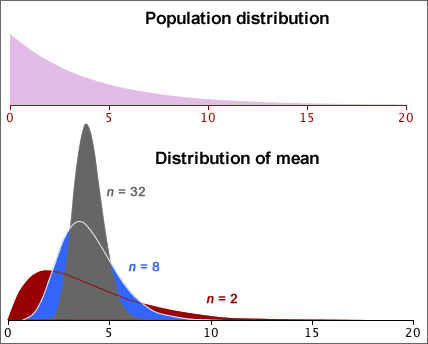
Need for multiple values to assess variability
We usually need to make two or more measurements of a variable to get any information about its variability. A single value contains no information about the quantity's variability.
Achieving the impossible?
Fortunately, we do not need multiple sample means to assess the variability of a sample mean. Its distribution can be estimated from a single sample using
 = μ
= μ
 =
= 
The distribution of the mean can be approximated with a normal distribution with this mean and standard deviation, if we replace µ
and σ with  and s.
and s.

Independent random samples
The formula for the standard deviation of a sample mean,
 =
= 
is only accurate if the sample values are independent.
Dependent random samples
When sample values are correlated with each other, they are said to be dependent and the formula
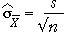
can badly underestimate the variability (and hence accuracy) of the sample mean of dependent random samples.
Always check that a random sample is independently selected from the whole population before using the formula for the standard deviation of the sample mean.
Sampling with replacement from finite populations
When a random sample is selected with replacement from a finite population, the sample values are independent and the standard deviation of the sample mean is again
 =
= 
Note however that the population standard deviation, σ, uses divisor N, the number of values in the population, rather than (N - 1).
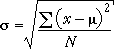
Sampling without replacement from finite populations
When a sample is selected without replacement, successive values are no longer independent — if a large value is selected, it cannot be selected again, so the next value will tend to be lower.
For sampling without replacement, a different formula should be used for the standard deviation of the sample mean:
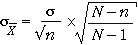
The quantity (N - n) / (N - 1) is called the finite population correction factor. It can usually be ignored if only a small fraction of the population is sampled (say under 5%).
Normal distribution parameters
The family of normal distributions consists of symmetric bell-shaped distributions that are defined by two parameters, µ and σ, the distribution's mean and standard deviation.
Normal distributions as models for data
The sample data rarely gives enough information for us to be sure that the underlying population is normal, but a normal model is often used unless there is obvious non-normality in the data.
Even if the sample data are obviously skew, a normal distribution may be a reasonable model for a nonlinear transformation of the values (e.g. a log transformation).
Distribution of summary statistics
A more important reason for the importance of the normal distribution in statistics is that...
Many summary statistics have normal distributions (at least approximately).
The Central Limit Theorem shows that the mean of a random sample has a distribution that is close to normal when the sample size is moderate or large, irrespective of the shape of the distribution of the individual values. The following are also approximately normal when the sample size is moderate or large...
Effect of normal parameters on distribution
Distributions from the normal family have different locations and spreads, but other aspects of their shape are the same. Indeed, if the scales on the horizontal and vertical axes are suitably chosen, ...
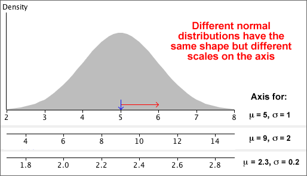
A common diagram for all normal distributions
All normal distributions have basically the same shape.
This should allow you to sketch a normal distribution, given any values of µ and σ.
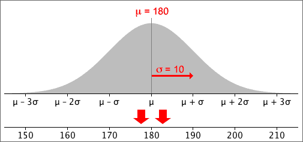
Some probabilities for normal distributions
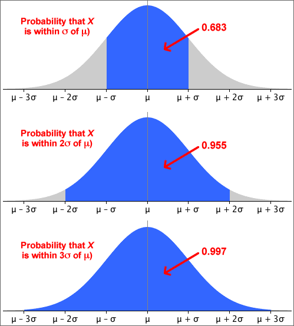
A more precise version of the middle probability is
70-95-100 rule of thumb and the normal distribution
These probabilities are the basis of the 70-95-100 rule of thumb for 'bell-shaped' data sets.
Standard deviations from the mean
Any x-value can be expressed as a number of standard deviations from the mean — its z-score.
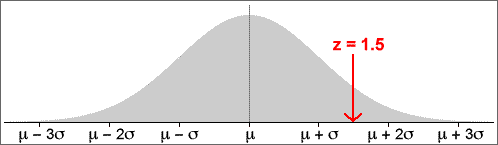
Mathematically,

or equivalently,
x = μ + z × σ
Probabilities and z-scores
Any probability (area) relating to a normally distributed random variable, X, can be expressed in terms of z-scores:
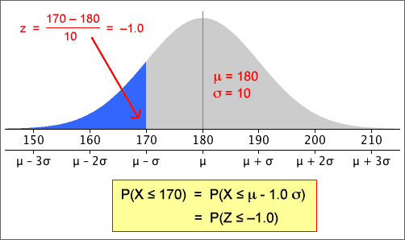
Note in particular that:
Distribution of z-scores
Calculating a z-score from a value, x, is called standardising it.
standardised value, 
If X has a normal distribution, then Z has a standard normal distribution with mean µ = 0 and standard deviation σ = 1.
Probabilities for the standard normal distribution
After translating a probability about X into one about a z-score, it is easier to evaluate it.
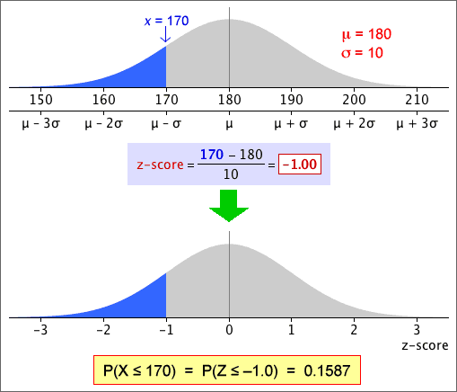
Areas under the standard normal curve can be evaluated in Excel and most statistical programs. Statistical tables can also be used (see later).
Evaluating other probabilities
Other probabilities about normal distributions can be found using the following properties:
Probability of higher value
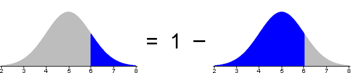
Probability of value between two others
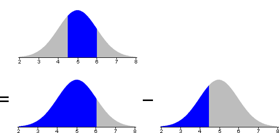
In both cases, the conversion can be done either before or after translating the required probability from x-values to z-scores.
Standard normal probabilities without a computer
Probabilities about z-scores can be found without a computer. Most introductory statistics textbooks contain printed tables with left-tail probabilities for the standard normal distribution.
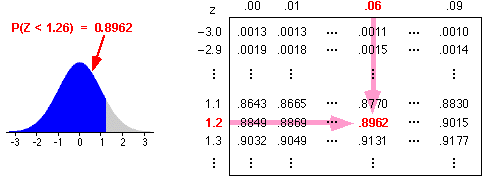
These tables can be used after the required probability has been translated into a problem relating to the standard normal distribution.
Finding an x-value from a probability
Finding quantiles
To find the x-value for which there is probability p of a normal distribution being lower,
The first step of this process can be done with Excel (or other statistical software) or statistical tables can be used. For example, the diagram below shows how to find the z-score such that there is probability 0.9 of being less.
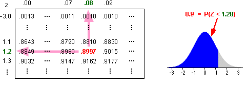
Translating from a z-score to the corresponding x-value is done with the formula,
x = μ + z σ
Do the data come from a normal distribution?
A histogram may indicate that a sample is unlikely to come from a normal distribution, but a normal probability plot can indicate more subtle departures from a normal distribution.
If the data set is from a normal distribution, the data should be spaced out in a similar way to the normal quantiles, so the crosses in the normal probability plot should lie close to a straight line.

How much curvature is needed to suggest non-normality?
This is a difficult question to answer and we will not address it here.
A sample proportion has a distribution
If a categorical data set is modelled as a random sample from a categorical population, the sample proportions must be treated as random quantities — they vary from sample to sample.
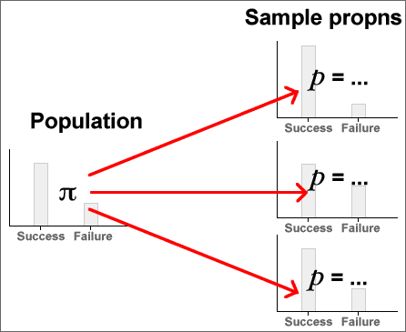
The population proportion in a category is called its probability, and is often denoted by π. The corresponding sample proportion is usually denoted by p.
| Sample Statistic | Population Parameter | |
|---|---|---|
| Mean | µ | |
| Standard deviation | s | σ |
| Proportion/probability | p | π |
In practice, we only have a single sample and must use it to get information about the underlying population.
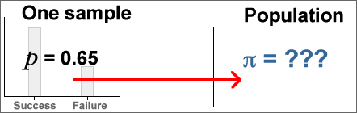
Properties of a sample proportion
A sample proportion from a random sample of size n has a distribution that ...
Count and proportion of successes
Although the sample proportion in a category, p , is a good summary statistic, the raw count of sample values in the category, x = np, contains equivalent information and is often easier to use. They have distributions with the same shape (other than the scaling constant n).
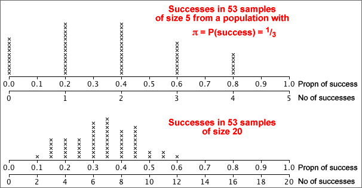
General notation
In a categorical population, we choose one category of interest and call it success; all other categories are collectively called failures. The population proportion of successes is denoted by π.
When a random sample of n values is selected, we denote the number of successes by x and the proportion of successes by p = x/n.
Distribution of a sample proportion
The number of successes, x , has a 'standard' discrete distribution called a binomial distribution which has two parameters, n and π.
In practical applications, n is a known constant, but π may be unknown. The sample proportion, p , has a distribution with the same shape, but is scaled by n .
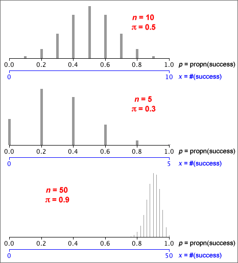
Assumptions underlying the binomial distribution
Evaluating binomial probabilities
They may be obtained using ...
A range of counts
Finding the probability that the number of successes is within an interval involves adding the binomial probabilities for all integer values in the interval.
Think carefully about the wording of the interval — does it include the values at the end? Adding or subtracting 1/2 to the endpoints of the interval makes it clearer. (This is also particularly useful when using the normal approximations that are described in the following pages.)
| In words... | In terms of X | Using 1/2 |
|---|---|---|
| More than 5 | X > 5 | X > 5.5 |
| Greater than or equal to 5 | X ≥ 5 | X > 4.5 |
| No more than 5 | X ≤ 5 | X < 5.5 |
| At least 5 | X ≥ 5 | X > 4.5 |
| Fewer than 5 | X < 5 | X < 4.5 |
| 5 or fewer | X ≤ 5 | X < 5.5 |
The following example illustrates the use of 1/2 in this way.
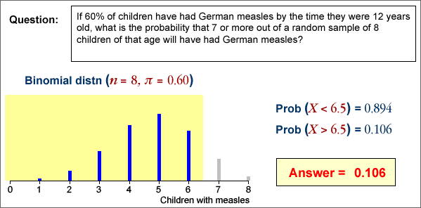
Mean and standard deviation of x and p
The mean and standard deviation are given below for the proportion of successes p , and number of successes, x = np

The fact that both x and p are approximately normally distributed in large samples is justified below.
Proportions and means
If we assign a code of '1' to the successes and '0' to the failures in the random sample, then the resulting values are called an indicator variable. Its mean is identical to the proportion of successes.
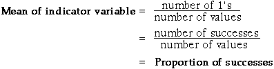
Since the proportion of successes in a sample is a kind of mean, its distribution is close to a normal distribution if the sample size is large enough.
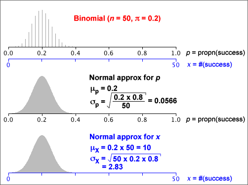
Use of the normal approximation to the binomial distribution
To avoid adding large numbers of binomial probabilities, the normal approximation can be used to find the probability that a binomial variable is within a certain range when the sample size, n , is large.
A common rule-of-thumb for when this kind of normal approximation can be used is:
nπ > 5 and n(1-π) > 5
An example is given below:
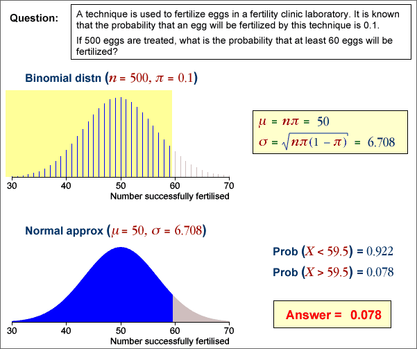
Note the translation of the range of values into one involving 1/2. It is called a continuity correction in this context.